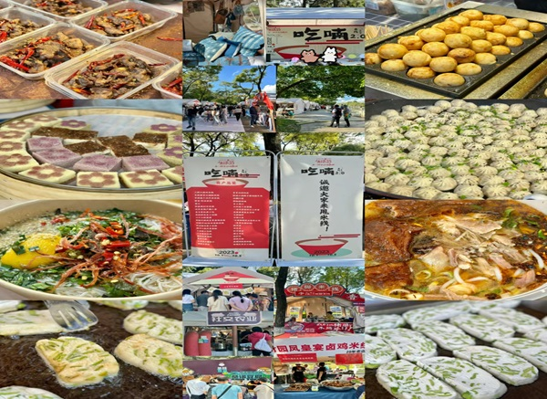

"Kunming Old Street Ensemble: Intersection of Historical Charm and Bustling Commerce"
昆明老街群是昆明市中心地区保存完好的历史街区，包括光华街、甬道街、景星街和钱王街等。 这些老街以其独特的历史韵味和丰富多彩的商业活动吸引着许多游客和市民。 光华街位于昆明市中心，东起正义路，西至五一路，全长435米。这条老街保存了昆明古朴的建筑风格，是品尝地道小吃、 购买古玩和药材的好去处。漫步在光华街上，可以感受到浓厚的历史氛围，古朴的建筑和熙熙攘攘的人群交相辉映，仿佛让人穿越到了昔日的繁华。 光华街不仅有着丰富的历史文化底蕴，还是昆明美食的集中地。这里的小吃摊和餐馆琳琅满目，各种口味的米线、过桥米线、烤串、烧烤等应有尽有， 让人垂涎欲滴。其中，最具代表性的当属昆明特色小吃——小锅米线。这是一道源自于云南的传统美食，以其独特的味道和做法深受当地人和游客的喜爱。 小锅米线选用优质的米粉和各种配料，配以鲜美的汤底，煮制而成。汤底鲜美，米线细滑，配料丰富多样，是一道地道的昆明美食。
除了美食，光华街还有许多古玩店和药铺，吸引了许多喜爱收藏和寻宝的人士。在这里，你可以淘到各种珍稀古董、民俗工艺品，以及具有历史价值的文物。 古玩店的老板们都是经验丰富的鉴定师，他们会为你讲解每件古董的来历和故事，让人受益匪浅。 甬道街位于昆明老城区，是一个历史悠久的商业街区。早在1983年，甬道街就已成为昆明最早的花鸟市场，如今已经发展成为景星珠宝花鸟市场， 吸引了众多市民和游客前来购物。甬道街保存着浓厚的历史文化氛围，街道两旁是一些具有特色的老式建筑，石板路铺就的街道上人来人往，热闹非凡。 在这里，你可以找到各种珍稀花鸟、古玩字画、装饰品和各种饰品，也可以品尝到地道的云南小吃和特色美食。
景星街是昆明老城区的热闹商业街，汇聚了各种各样的小店铺和摊位，琳琅满目的商品应有尽有。这里是购物的天堂，你可以找到各种稀奇古怪的商品， 包括工艺品、服饰、首饰、古玩字画等。景星街不仅有着丰富多彩的商品，还有着浓厚的历史文化氛围。在这里，你可以感受到浓厚的昆明市井气息，体验到真正的老城风情。
钱王街位于昆明老城区的中心地带，是一个融合了潮流和历史的街区。这里有着各种各样的时尚店铺、餐厅和咖啡馆，是年轻人的打卡地。在这里， 你可以看到老宅子里的星巴克、英国专业的电音酒吧，还有很多手工艺人的精品商店。钱王街是一个时尚与历史并存的地方，吸引着许多年轻人和时尚达人前来观光和购物。 昆明老街群以其独特的历史文化底蕴和丰富多彩的商业活动吸引着众多游客和市民前来观光和购物，成为了昆明市的一大特色景点。随着城市的发展和老街的改造， 这些历史街区焕发出新的生机，吸引着更多的人们来此体验昆明的历史风情和城市魅力。